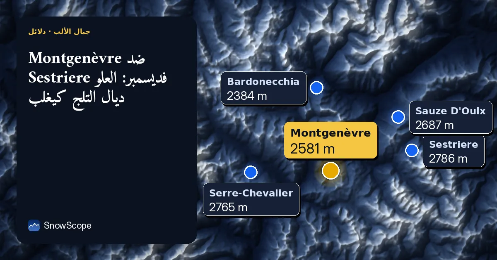

Montgenèvre ضد Sestriere فديسمبر: العلو ديال التلج كيغلب
إلا كنتي موجد الطوموبيل لويكاند ديال السكي فديسمبر فالحدود بين فرانسا وإيطاليا، Montgenèvre كتغلب Sestriere فالمستوى ديال القرية. الباز ديالها فـ 1795 م ومعاها 56 سم ديال التلج فالمعتاد فديسمبر، مقارنة بـ 24 سم فالباز ديال Sestriere فـ 1600 م. فالفوق، بجوج محطات كيعطيو تلج مزيان، ولكن Montgenèvre كتعطيك تغطية آمنة من لتحت ديال البيستات.
شوف توقعات التلج مباشرة ديال Montgenèvre فالتطبيق ديال SnowScopeالعلو ديال التلج، التنبيهات والخريطة 3D، فابور.
باز طالعة من دابا
بالنسبة للي كيسوق فالويكاند، تبدا فالعلو كيهنيك من الصداع. الدومين ديال Montgenèvre فيه 62 كم ديال البيستات و24 ريمونط بين 1795 م و2581 م، كتعطيك 786 م ديال الفرق فالعلو. حيت لتحت ديال الريمونطات كاين فـ 1795 م، كتبدا فتلج عالي ديريكت.
التقدير ديال التلج اليوم 13 نونبر 2026 كيبيّن 0 سم فالباز، 5 سم فوسط الجبل (2188 م)، و11 سم فالقمة (2581 م). التلج الجديد فالسيمانات الجاية مقدر بـ 23 سم فالباز، 36 سم فوسط الجبل، و52 سم فالقمة. فالتوقعات ديال جوج سيمانات من 13 لـ 26 نونبر 2026، الوسط ديال الجبل والفوق كيتوقع يكون فيه بين 61 و95 سم.

التلج المعتاد ضد دجنبر الناشف
فتاريخ التلج ديالنا ديال 46 شتوة اللي فاتو (1980-81 لـ 2025-26)، Montgenèvre كيكون فيها 56 سم فديسمبر المعتاد فالباز، و55 سم فـ 15 ديسمبر. فديسمبر الناشف (1 شتوة من 10)، العلو ديال التلج كيهبط تحت 22 سم، بينما ديسمبر العامر (1 من 10) كيكون فوق 102 سم. الشتوة اللي فاتت (2025-26) كان فيها فالمعدل 37 سم فالباز، وأخيب ديسمبر كان 2015-16 بـ 13 سم، مقارنة بـ 123 سم فديسمبر العامر ديال 1996-97.
طلع الفوق والتلج كيزيد. وسط الجبل (2188 م) فيه فالمعدل 65 سم فديسمبر المعتاد (64 سم فـ 15 ديسمبر)، كيتراوح بين 28 سم فشتوة ناشفة لـ 115 سم فشتوة عامرة. القمة (2581 م) فيها فالمعدل 78 سم، مع 36 سم فالشتوات الناشفة و139 سم فالشتوات العامرة.
التوقيت مهم لرحلة الويكاند. فالباز، 30 سم أو كتر كيوصلو فـ 61 % من الشتوات اللي فاتو بين 1-7 ديسمبر و76 % بين 8-14 ديسمبر، كيطلع لـ 89 % بين 15-21 ديسمبر و96 % بين 22-28 ديسمبر (مع 50 سم أو كتر كتوصل لـ 35 %، 46 %، 59 %، و72 %). وسط الجبل كيشوف 30 سم أو كتر فـ 70 %، 87 %، 98 %، و98 % من الشتوات اللي فاتو سيمانة بسيمانة. فالقمة، 30 سم أو كتر كيوصل لـ 83 %، 91 %، 98 %، و98 %.
شحال كيسوى الفورفي
بالنسبة للناس اللي كيحسبو الميزانية، التواريخ ديال الفورفي كتدير فرق كبير. فالسيت الرسمي، فورفي ديال نهار واحد للبالغين فـ Montgenèvre كيسوى 45,50 EUR حتى لـ 18 ديسمبر 2026. من 19 ديسمبر 2026، كيبدا السيزون العالي والفورفي ديال نهار واحد كيولي 56 EUR. لرحلة ديال 6 أيام، فورفي ديال 6 أيام Montgenèvre + Monts de la Lune كيسوى 301,00 EUR فالسيزون العالي من 19 ديسمبر 2026.
أثمنة الفورفيات ديال Sestriere ما تراجعوش فالسيت الرسمي، داكشي علاش ما كنعطيوش تمن وما كنقولوش شكون المحطة اللي أرخص.
Montgenèvre ضد Sestriere فجهة خرى ديال الحدود
Sestriere كاين فجهة خرى ديال الحدود فإيطاليا، مع دومين ديال السكي فيه 58 كم ديال البيستات و22 ريمونط من 1600 م لـ 2786 م (1186 م ديال الفرق فالعلو). الريمونطات العالية ديالها فيها 91 سم فديسمبر المعتاد (90 سم فـ 15 ديسمبر)، مع 41 سم فشتوة ناشفة و163 سم فشتوة عامرة.
ولكن لتحت فالباز ديال الريمونطات، ديسمبر غالبا كيكون ناشف فـ Sestriere فـ 1600 م. العلو المعتاد فديسمبر هو 24 سم (25 سم فـ 15 ديسمبر)، كيهبط تحت 6 سم فـ 1 شتوة ناشفة من 10 وكيطلع فوق 57 سم فشتوة عامرة. فالسيمانات الربعة، الباز ديال Sestriere كيوصل لـ 30 سم أو كتر غير فـ 26 %، 33 %، 41 %، و48 % من الشتوات اللي فاتو (و50 سم أو كتر فـ 9 % لـ 17 %). فوسط الجبل (2193 م)، العلو المعتاد فديسمبر هو 51 سم.
كيفاش 46 شتوة تبدلات
فتاريخ التلج ديالنا، المعدلات ديال ديسمبر فـ Montgenèvre كانت عالية فالـ 15 شتوة الأخيرة (2011-12 لـ 2025-26) كتر من الـ 15 شتوة الأولى (1980-81 لـ 1994-95). فالباز، المعدل ديال ديسمبر تحول من 41 سم لـ 68 سم. وسط الجبل طلع من 49 سم لـ 76 سم، والقمة تحولات من 62 سم لـ 89 سم، وهادشي كيبيّن عمق كتر مؤخرا رغم سنين ناشفة بحال 2015-16.
نصايح للي كيتزلجو
- ستهدف 8-14 ديسمبر أو سكي قبل 19 ديسمبر 2026 إلا بغيتي الفورفي ديال نهار واحد بـ 45,50 EUR مع 30 سم أو كتر فوسط الجبل فـ 87 % لـ 98 % من الشتوات اللي فاتو.
- بقى فوسط الجبل (2188 م) والقمة (2581 م) إلا طلعتي بين 1-7 ديسمبر، فين 30 سم أو كتر كاين فـ 70 % و83 % من الشتوات اللي فاتو عوض 61 % فالباز.
- حجز الفورفي ديال Montgenèvre فالسيت الرسمي قبل ما يبدا السيزون العالي فـ 19 ديسمبر 2026 بـ 56,00 EUR.
- شوف النشرة ديال الانهيارات قبل ما تسكي برا البيست، خصوصا مور التلج ديال بداية السيزون على طبقات رقيقة.
خرائط أخرى (مواقع خارجية)
المراجع والمصادر
- Montgenèvre, official ski pass prices 2026-27 skipass.montgenevre.com/fr/tarifs-guichet
- SnowScope, December snow at three heights and today's snow map snowscope.app/
على هاد الأرقام
العلو ديال التلج فالمحطات هو أكثر تلج فالجهة الفوقانية فالتاريخ المكتوب؛ هادو تقديرات لمنطقة، ماشي قياس فنقطة وحدة. التوقعات يمكن تتبدل. ديما شوف النشرة الرسمية ديال الانهيارات قبل ما تخرج من البيست.
النشرات الرسمية ديال الانهيارات: Météo-France – Bulletin d'estimation du risque d'avalanche
كيفاش تستاشهد بهاد المقال
للبحث، التعليم ولا الصحافة: الأرقام والرسومات تقدر تعاود تخدم بيهم بحرية تحت CC BY 4.0 مع هاد الاستشهاد.
SnowScope (2026), Montgenèvre ضد Sestriere فديسمبر: العلو ديال التلج كيغلب, https://snowscope.app/blog/ar/2026/11/montgenevre-december-skiing-snow-record-cost-2026.html, تشاف ف 2026-11-14
SnowScope (Atlas Labs). (2026, November 14). Montgenèvre ضد Sestriere فديسمبر: العلو ديال التلج كيغلب. SnowScope snow reports. https://snowscope.app/blog/ar/2026/11/montgenevre-december-skiing-snow-record-cost-2026.html
BibTeX
@misc{snowscope2026montgenevredecemberskiin,
author = {{SnowScope (Atlas Labs)}},
title = {Montgenèvre ضد Sestriere فديسمبر: العلو ديال التلج كيغلب},
year = {2026},
month = nov,
howpublished = {\url{https://snowscope.app/blog/ar/2026/11/montgenevre-december-skiing-snow-record-cost-2026.html}},
note = {Published 2026-11-14 13:29 UTC; accessed 2026-11-14}
}· CC BY 4.0 · الطريقة، الداتا والأدوات →
Montgenèvre: التلج والحرارة حسب العلو، هاد الشتا مقارنة مع اللي فاتت (الأدوات) →
تابع Montgenèvre
فابور: ميساج ملي يجي التلج، والتوقعات كل صباح.